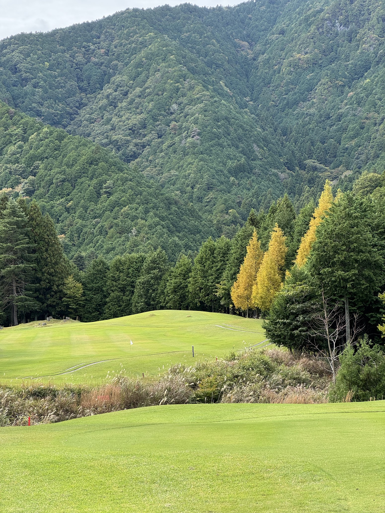
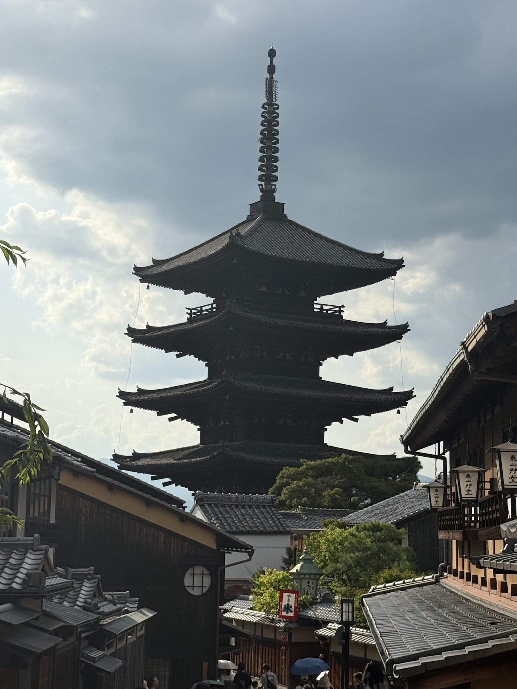
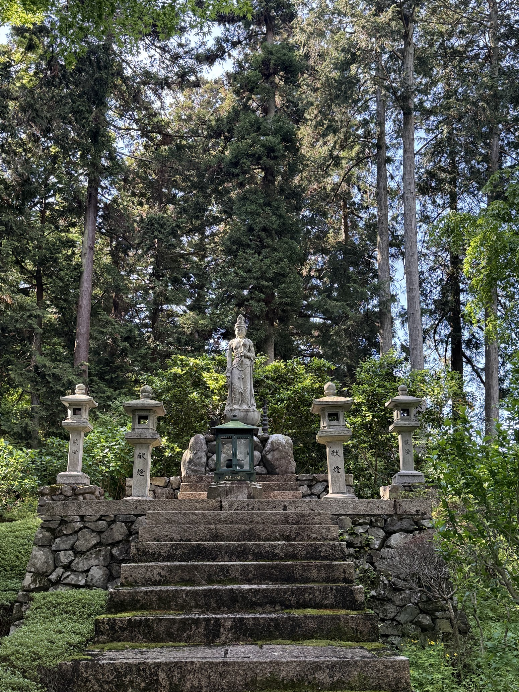
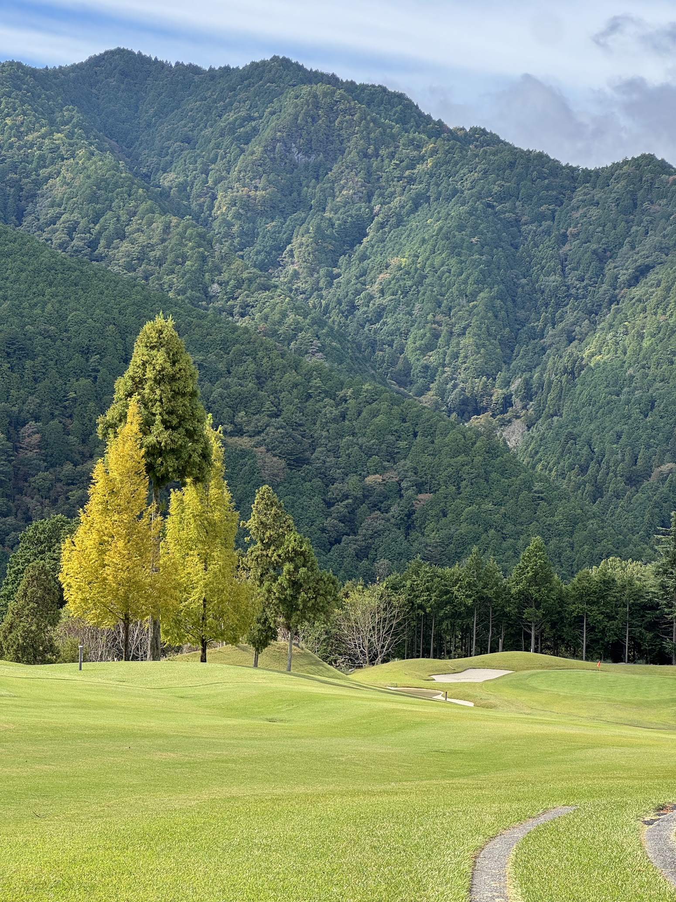
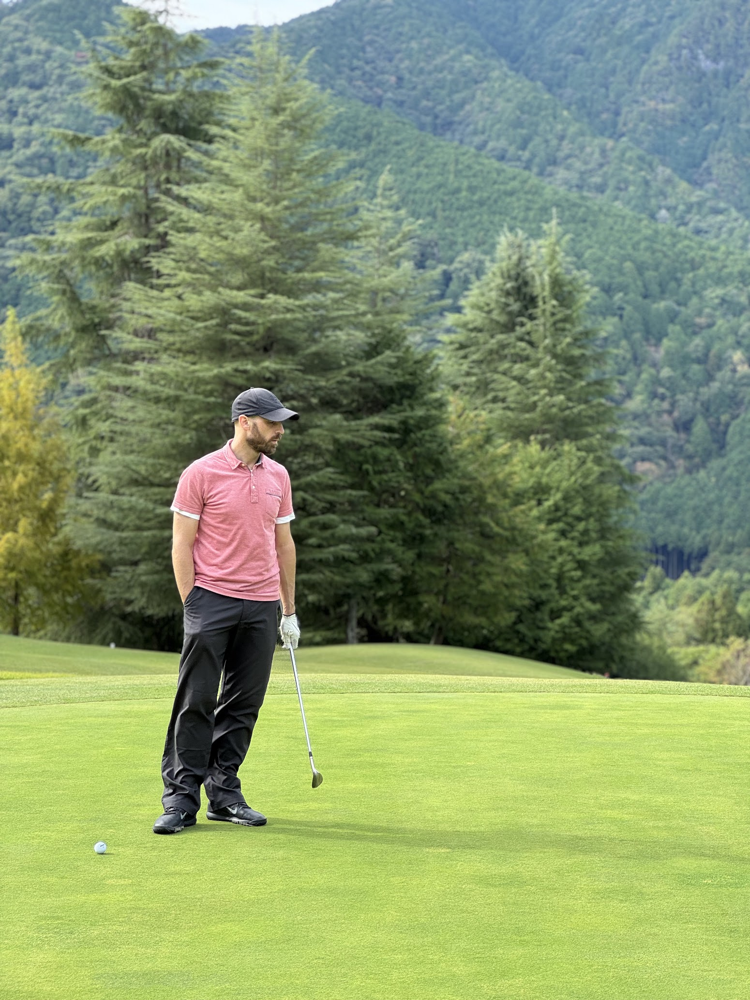

Un viaje diseñado para quienes valoran tanto la precisión del golf como la profundidad de la inmersión cultural.
Esta experiencia combina campos de primer nivel, hospitalidad refinada, logística impecable y un flujo narrativo cuidadosamente dosificado. Concebido no como un programa deportivo, sino como un viaje completo de alto nivel articulado en torno al ritmo, el paisaje, el confort y el acceso cultural.
La estructura general alterna movimiento, juego, inmersión cultural y recuperación de un modo natural, sin apuros.

Refinamiento urbano y ritmo suave de llegada. Acompañamiento selecto, contexto cultural guiado y exploración libre de la capital antes de partir hacia las montañas.
El golf y el paisaje se convierten en protagonistas. Dos rondas en campos emblemáticos — Fuji Classic y Kawana Fuji Course — con onsen y el drama visual del escenario volcánico.
La capa más profunda del viaje. Kyoto, Osaka, Nara y Kobe ofrecen patrimonio, gastronomía, tres rondas de golf y un cierre dinámico con cena de despedida.


A lo largo del recorrido, se desarrolla una competencia privada y amistosa entre los participantes. El ganador recibe una pieza japonesa de golf artesanal, creada exclusivamente para esta experiencia.
Cinco rondas en campos cuidadosamente seleccionados, equilibrando calidad de juego, paisaje y coherencia con el itinerario.
El golf se inscribe en una narrativa más amplia de lugar y atmósfera — la sofisticación urbana de Tokio, el drama visual de las tierras altas de Fuji, y el entorno cultural estratificado de Kansai.
Una sexta ronda opcional puede ofrecerse. Todos los horarios de salida y la logística se gestionan por anticipado.
Diseñada con contención y profundidad — momentos selectos de contexto, atmósfera e interpretación, en lugar de saturación.
Acompañamiento privado en días clave a través del paisaje, la arquitectura, la hospitalidad, la gastronomía y la sensibilidad local.
Golf y cultura se refuerzan mutuamente — creando un viaje con coherencia e intención.


Una visión detallada del viaje. El ritmo alterna entre golf, cultura, movimiento y recuperación — cada transición diseñada para sentirse natural.
AOI no simplemente ensambla servicios. Diseñamos una experiencia de viaje completa con coherencia e intención — donde la precisión se encuentra con la belleza, y cada momento se moldea con cuidado.
Solicitar Este Viaje